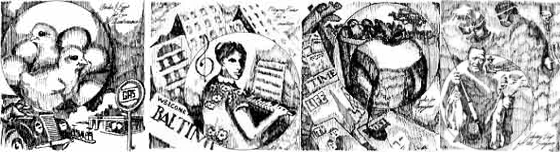

Reprinted by permission of the Devin-Adalr Company, Inc.,
Old Greenwich, Conn. Copyright 1960 by Charles Morrow
Wilson.
There's never been a better antidote to modern society's "everything has to cost money to be worth anything" insanity than Charles Morrow Wilson's classic little book, Let's Try Barter.
I mean, how can you argue with a guy who correctly points out that the direct trade of goods stops sales taxes "the way hanging stops the horse thief" and federal and state taxes "the way a Union Army cannonball stopped my Great-Uncle Luke at the battle of Pea Ridge, Arkansas"?
I only wish we could reprint all of Let's Try Barter in this issue but, since we can't, here's a section from the book especially for you homesteaders out there.-JS.
Through the years the family-run farm has proved itself a stronghold for barter of goods and services. United States agriculture is particularly indebted to the trading of farm labor, a practice as helpful in these years of the family farm's struggle to survive soaring wages and wavering farm indices as it was in frontier times when county neighbors traded labor to clear fields, raise barns and cabins, and trade the use of plows and oxen.
Barter has been one of the principal expedients for operating United States agriculture. It is one of the great hopes for keeping it going. It has made possible the introduction of many great crops of fruits, berries, grains, and vegetables. It offers present-day means for introducing future garden and berry crops and for a great expansion of community markets where surplus produce can be traded directly for many Kinds of surplus merchandise.
The tillable roots of barter grow deep; in our language they reach back to the ox-powered days of Piers the Plowman, or perhaps farther. Farming and barter fit together well because both are essentially specific and personalized. This has been proved by many farm people in many places. The most effective advancer of farm barter I have known is Evelyn Harris, sometimes known as the barter lady of the Chesapeake Shores.
The gallant story began almost a third of a century ago when Mrs. Harris found herself with a thousand-acre farm, five young children, and the prospect of a devastating depression which was already settling on the 500-acre fruit farm which the Harrises had inherited and worked very hard to operate. Following her husband's death, Evelyn found herself the sole support of her five children, plus four families of good neighbors who had intermittently "helped out" on the Harris farm. All were counting on "Miz Evey" for "cash money" wages and, even more importantly, for sorghum, flour and meal, cured pork, fresh eggs, veal and mutton, and other staff-of-life factors. Mrs. Harris set out to barter her way through. In one way or another she succeeded. Tax paying provided the first motivation. In the inevitable manner, her taxes came due-even while farm prices continued to fall apart.
Mrs. Harris journeyed to the county seat for a heart-to-heart talk with the tax collector. The tax collector had no talk to offer beyond reiterating that the taxes were due and had to be paid. With persistence the young widow pointed out that she simply could not spare the last of her operative cash for paying taxes and therefore requested permission to pay them in farm produce. Eventually the collector referred her to the county judge. The county judge was likewise confused. However, after lengthy reflection the dignitary recalled that the county road builders were in need of locust posts for building roadside guard rails. The Harris farm had many acres of tall young locusts. The county required about five thousand "rounds" of the long-lasting posts and would pay thirty-five cents apiece.
Mrs. Harris took on the assignment. She employed county neighbors to fell the young locusts and cut the slender trunks into poles of specified dimensions. Since two thousand of the trees were required to fill the order for guard posts, the choppers were obliged to clear away some of the vast clutter of discarded tops and branches so that the county trucks could get in. The sale of five thousand locust guard posts paid haulage and choppers' wages and netted about $1,600 in cash, enough to pay the abhorrent taxes for three years. Even more valuably, it opened the way for a great and winning game of barter.
Tops and unused limbs of the young locusts make superior fuel wood. Mrs. Harris had neighbors who were eager to clear up the tops and take pay in farm-raised foods, of which the Harris farm still had an abundance. They chopped and stacked about a hundred cords of locust tops and limbs. Using her husband's truck, the barter lady began trading locust firewood for needed groceries. Next she began paying doctor and dentist bills with the same harvest. She next succeeded in swapping the cordwood for needed bakery products and for bus travel to and from the town high school for her two older children.
Mrs. Harris set out to expand her farm barter further. For several years the Harrises had been growing, harvesting, and feeding several hundred bushels of corn to livestock and poultry. Following the old American extravagance, the corn cobs had been wasted. The Barter Lady knew from experience that corn cobs are excellent kindling and one of the best fuels for broiling fires. She carried the knowledge to town, and the local barber volunteered to credit her with a dozen haircuts for her young sons in return for a truckload of clean corn cobs delivered to his woodshed.
Her next move was to pay for beauty-parlor services with home-raised frying chickens. In a nearby town she met a garage and filling-station owner whose hobby was raising baking chickens. The garage keeper wished to have setting eggs and newly hatched chicks and was eager to swap gasoline, motor oil, and mechanic's services for them. Mrs. Harris happily provided her share of the barter from home sources. She next located a grain-mill operator who agreed to swap ten barrels of well-milled flour for fifty bushels of her wheat, also to grind her corn to meal on shares.
Mrs. Harris, an accomplished pianist, for several years had been contributing music for the farm women's club to which she belonged. The club director asked if she would be willing to take part in the club's convention in Baltimore, all expenses provided in return for playing the piano. The Barter Lady accepted happily, bartering about six hours of musicianship for a much-enjoyed four-day vacation in the big city. Next, she swapped home-raised roasting chickens with a coastal steamship line for a vacation cruise for her family.
The Harrises suffered some rather serious surgery bills and found that, while most merchandise became cheaper as farm prices fell, surgery fees stood fixed. A local dentist accepted fresh fruits, fine berries, native fowl, and farm-fresh eggs in payment for dental services for the entire family But the surgeon kept sending bills for the two appendectomies until the Barter Lady learned that he cherished one thing above all others-an old-fashioned week-long fishing vacation. Mrs. Harris offered to supply a simple but enticing fishing vacation, complete with homecooked meals, live minnows, crayfish, night crawlers, catalpa worms, red worms, grasshoppers, and moral encouragement in settlement of the surgery. The surgeon eagerly accepted, proved himself an ideal house guest as well as an able fisherman, and marked the operations paid in full.
Again the Barter Lady had to meet her taxes. This time she permitted county and state highway crews to dredge and load out sand and gravel from some of her acres which front on Chesapeake Bay. Her taxes were met, and in celebration she tried a variant of barter. She traded a standing walnut tree as down payment on a piano. When wool prices tumbled to less than half the usual farm-door low, she had her wool clip milled into finished warm cloth. She personally shaped the cloth into sample-measure double blankets, crib blankets, and auto robes, all warmer, softer, and more generously sized than those sold in stores. She then bartered the homemade woolen goods for school books, shoes, suits, dresses, and other family needs. The strategy here was especially fine. Nobody wanted shorn wool. But when it was changed to warm cloth, many were eager to swap for it.
The Barter Lady's progress showed other helpful aspects. For one, she was able to keep her swapping activities close to home; in great part on home premises, as when neighbors came with offers to help harvest the fruit crops on shares or to "work out" the price of a fat pig or a bred ewe or a baby beef. She effected about a third of her barters in nearby towns and villages, where she was able to swap with maximum control for goods and services required directly by her family, her farm, or herself.
Presently the Barter Lady began using the mails to advance her swapping. Reading is her favorite hobby, and the scarcity of cash had greatly reduced her supply of books and magazines. Evelyn began writing letters to the circulation managers of her favorite magazines, suggesting that she be permitted to pay for the subscriptions in apples. They were not ordinary apples; they were her very special, personally selected greenings, winesaps, and other honest-to-goodness eating apples, home-raised, home harvested, and especially stored to supply what most apples lack nowadays-flavor. She promptly discovered that most magazine circulation managers have a liking for good eating apples. Practically every letter brought a gracious answer and an enthusiastic acceptance of the swap offer.
So Mrs. Harris favored one of the well-known book clubs with a letter suggesting that she be permitted to pay for a year's selection of books with two bushels of Nancy Hall sweet potatoes and eight fat, home-dressed roasting chickens, the latter to be shipped air express at the expense of the recipient. The book club promptly answered, "Indeed," and scribbled the post script "delighted."
Thus through the years Evelyn Harris used well-planned barter to raise her family, keep up the productiveness of a fine farm, help neighbors, and make good friends. One of her most admirable accomplishments has been the use of farm barter to demonstrate the distinctive quality of home-raised foods. As any observant consumer knows, the real food value of harvests never can be gauged competently just by the gallon or pound or price tag. Food is life and the principal cost of living. Nutrition and flavor, which are frequently as one, are the real measures of food values. Yet the continual hurry-scurry marketing of farm crops takes appallingly little account of flavor or nutritive worth.
Tragically, too, the prevailing direction in crop genetics and grading is toward volume of yield; much more frequently than not, maturity and honest ripeness are either evaded or faked. The great bulk of our fruits, our favorite berries, tomatoes, or food vegetables are harvested far ahead of actual ripeness; oranges almost invariably are dyed; commercial pack tomatoes are picked completely green and permitted to turn pink in storage. Chemical preservatives and coloring afflict a high percentage of the meats and meat products we consume. Too frequently potatoes, carrots, beets, and green vegetables are taken off soils long since changed to pits of chemical fertilizers; they cannot possibly taste good or approach complete nutrition. As a rule, commercial apple crops are no longer bred, propagated, or sprayed to taste like apples. Too much of our fowl, eggs, dairy products, beef, and pork taste like what they preponderantly are, viz., the outputs of livestock factories rather than creatures born in sunlit fields, pastures, and feeding pens. We are the number-one farming nation of the earth and we spend more for food per capita than any other nation. And while paying for the most expensive food consumed in any comparably populated area of earth, we endure much of the worst-flavored and least nutritious harvests eaten by man.
The paradox here is not wholly unavoidable. Barter can be made one of the more consistent remedies. Evelyn Harris and many other devoted farmers have long since demonstrated as much. Because it is direct, personalized, and comparatively slow motioned, barter is the best facility for respecting and gaining from the flavor and nutritive values of harvests. Farming has kept at least the living roots of personalized trade, abetted by personalized integrity of production. For these roots, barter serves as the living, life-sustaining soil.
|
|
 |
|